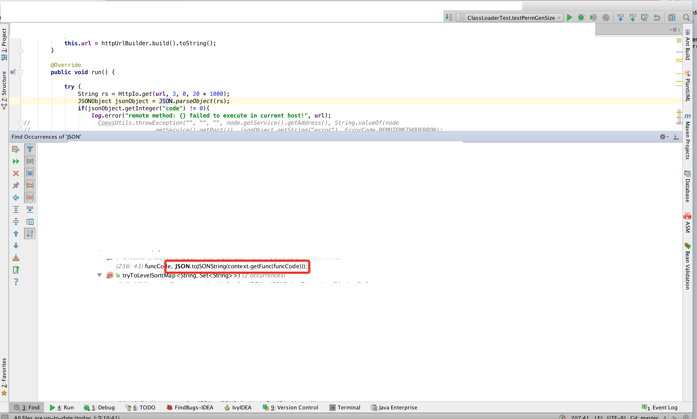

<!DOCTYPE html>
<html>
<head><meta name="generator" content="Hexo 3.8.0">
  <meta charset="utf-8">
  
  <title>磐石</title>
  <meta name="viewport" content="width=device-width, initial-scale=1, maximum-scale=1">
  <meta name="description" content="danielding&apos;s blog | java | bi">
<meta property="og:type" content="website">
<meta property="og:title" content="磐石">
<meta property="og:url" content="https://danieldingzju.github.io/index.html">
<meta property="og:site_name" content="磐石">
<meta property="og:description" content="danielding&apos;s blog | java | bi">
<meta property="og:locale" content="zh-CN">
<meta name="twitter:card" content="summary">
<meta name="twitter:title" content="磐石">
<meta name="twitter:description" content="danielding&apos;s blog | java | bi">
  
    <link rel="alternative" href="/atom.xml" title="磐石" type="application/atom+xml">
  
  
    <link rel="icon" href="/favicon.png">
  
  <link rel="stylesheet" href="/css/style.css">
  <link href="//fonts.useso.com/css?family=Source+Code+Pro" rel="stylesheet" type="text/css">
  <!--[if lt IE 9]><script src="//cdnjs.cloudflare.com/ajax/libs/html5shiv/3.7/html5shiv.min.js"></script><![endif]-->
  
</head></html>
<body>
<div id="container">
  <div id="wrap">
    <header id="header">
  <div id="banner"></div>
  <div id="header-outer" class="outer">
    <div id="header-title" class="inner">
      <h1 id="logo-wrap">
        <a href="/" id="logo">磐石</a>
      </h1>
      
        <h2 id="subtitle-wrap">
          <a href="/" id="subtitle">工程狮</a>
        </h2>
      
    </div>
    <div id="header-inner" class="inner">
      <nav id="main-nav">
        <a id="main-nav-toggle" class="nav-icon"></a>
        
          <a class="main-nav-link" href="/">Home</a>
        
          <a class="main-nav-link" href="/archives">Archives</a>
        
      </nav>
      <nav id="sub-nav">
        
          <a id="nav-rss-link" class="nav-icon" href="/atom.xml" title="RSS Feed"></a>
        
        <a id="nav-search-btn" class="nav-icon" title="Search"></a>
      </nav>
      <div id="search-form-wrap">
        <form action="http://www.baidu.com/baidu" method="get" accept-charset="utf-8" class="search-form">
          <input type="search" name="word" maxlength="20" class="search-form-input" placeholder="Search">
          <input type="submit" value="" class="search-form-submit">
          <input name="tn" type="hidden" value="bds">
          <input name="cl" type="hidden" value="3">
          <input name="ct" type="hidden" value="2097152">
          <input type="hidden" name="si" value="danieldingzju.github.io">
        </form>
      </div>
    </div>
  </div>
</header>
    <div class="outer">
      <section id="main">
  
    <article id="post-工作台系列1-DIY工作台" class="article article-type-post" itemscope="" itemprop="blogPost">
  <div class="article-meta">
    <a href="/2019/02/14/工作台系列1-DIY工作台/" class="article-date">
  <time datetime="2019-02-14T03:51:02.000Z" itemprop="datePublished">2月 14 2019</time>
</a>
    
  </div>
  <div class="article-inner">
    
    
      <header class="article-header">
        
  
    <h1 itemprop="name">
      <a class="article-title" href="/2019/02/14/工作台系列1-DIY工作台/">工作台系列1-DIY工作站</a>
    </h1>
  

      </header>
    
    <div class="article-entry" itemprop="articleBody">
      
        <h3 id="因">因</h3><p>​    很小的时候就有了电脑，但是都没有成功拆掉重新安装过。那时候就羡慕能够拆掉并且自己DIY的年轻人（那个时候觉得这就是聪明，有天赋）。可能是我太笨，也可能是我三心二意，即使买了多年的“电脑爱好者”（我竟然记得这本书名，当时大多数都看不懂，但就是喜欢买），也没有学会自己DIY这件事情。已经到了这个年纪的自己（有老婆有娃），突然后那么种渴望：哪怕是被生活所迫（必须好好工作养家），也要抽空也要弥补遗憾；我有种感觉：一直渴望得到的东西，以后终归会以某种形式在生命中得到完结。于是借着自我提升学习，公司申请服务器困难为理由，开始了人生中第一次的DIY：</p>
<h3 id="过程">过程</h3><ol>
<li><p>看了很多人的DIY分享，自制渲染服务器，游戏多开工作室机器，深度学习机器等的文章，大致有了概念：</p>
<ul>
<li>洋垃圾：服务器拆出来的零部件性能比家用的全新零部件好，价格还便宜。一般着淘宝上面专业的卖家，基本质量没有问题。</li>
<li>因为走的是“服务器”路线，所以主板也是ATX或者EX-ATX的，需要大极限。</li>
<li>主板主要分为CPU计算密集型和GPU计算密集型：CPU计算密集型的可以是双路主板：X79，X99组装的人比较多；GPU密集型则要求主板有多个PCI-X接口。</li>
</ul>
</li>
<li><p>确定了以上的信息开始通过淘宝找各种零部件了：</p>
<ul>
<li>主板：x79 双路主板，看了下价格，差距非常大，有650左右的，有2000左右的；毫无疑问，确认能用就上最便宜的。在看过几家的说明之后，确认了650左右的富士康，英业达c602主板也是可以用的，就是有短路问题，可能让主板报废。我想问题不大，到时候咨询下卖家怎么解决就好了，于是就大胆没了，最终证明我的判断没有错， 附<a href="https://item.taobao.com/item.htm?spm=a1z09.2.0.0.158b2e8d5nADc2&amp;id=566585645415&amp;_u=at2m176c16" target="_blank" rel="noopener">主板链接（卖家很不错，一直耐心处理我的咨询）</a>。 610</li>
<li>CPU:  主板敲定之后，确认合适的E5系列CPU，那必须是要上20核的，最终选择2660v2，附<a href="https://item.taobao.com/item.htm?spm=a1z09.2.0.0.158b2e8d5nADc2&amp;id=549403412615&amp;_u=at2m1743d1" target="_blank" rel="noopener">CPU链接</a>。 1680</li>
<li>内存：随意买了，先上<a href="https://item.taobao.com/item.htm?spm=a1z09.2.0.0.158b2e8d5nADc2&amp;id=560473661102&amp;_u=at2m175b18" target="_blank" rel="noopener">32G</a>。 563</li>
<li>散热器：感觉水冷比较酷，查了一些资料说水冷散热效果不错，于是买了两个<a href="https://detail.tmall.com/item.htm?id=548145258477&amp;spm=a1z09.2.0.0.158b2e8d5nADc2&amp;_u=at2m177184" target="_blank" rel="noopener">单风扇水冷</a>。 388</li>
<li>机箱：<a href="https://item.taobao.com/item.htm?spm=a1z09.2.0.0.158b2e8d5nADc2&amp;id=570913604709&amp;_u=at2m171db6" target="_blank" rel="noopener">先马坦克</a>，EX-ATX，ATX等都支持。 209</li>
<li>硬盘：二手<a href="https://item.taobao.com/item.htm?spm=a1z09.2.0.0.158b2e8d5nADc2&amp;id=553717997986&amp;_u=at2m1796bb" target="_blank" rel="noopener">3T硬盘</a>随便来一块。因为二手主板没有<a href="https://item.taobao.com/item.htm?spm=a1z09.2.0.0.158b2e8d5nADc2&amp;id=42468683216&amp;_u=at2m17df53" target="_blank" rel="noopener">SATA线</a>，补两根（一根备用）。 358 + 12.8</li>
<li>电源：主板是24+8+8，所以只能买特定的电源，刚开始买了伯爵的，但是发现支持不了，差点烧坏主板；换了主板卖家推荐的<a href="https://item.taobao.com/item.htm?spm=a1z09.2.0.0.158b2e8d5nADc2&amp;id=569406486307&amp;_u=at2m17aaff" target="_blank" rel="noopener">电源</a> : 239</li>
<li>网卡：因为是服务器主板，只有光线网卡，需要购买家用<a href="https://item.taobao.com/item.htm?spm=a1z09.2.0.0.158b2e8d5nADc2&amp;id=566286177589&amp;_u=at2m175c98" target="_blank" rel="noopener">千兆网卡一枚</a>。18</li>
<li>显卡：<del>一年前买的显卡GT730一直没用上。368</del>; GTX750   259</li>
</ul>
<p>总价：4136</p>
</li>
<li><p>拿到这些零部件之后就要开始动手了。</p>
<ul>
<li>主板安装如果和机箱接触就会发生短路，然后就彻底完蛋了，毕竟不是ATX的主板，非常规，所以在淘宝卖家的指导下买了特定的主机箱加上特定位置的胶带纸解决问题。</li>
<li>安装CPU，内存，显卡，硬盘，散热器和连接usb线。</li>
</ul>
</li>
</ol>
<hr>
<h3 id="软件篇">软件篇</h3><p>为了达到不带mac上班的目的（15 实在是重啊），考虑了可行性：</p>
<ol>
<li>上班只要使用台式机，可以运行mac系统的话，编程画图等工作足够了。</li>
<li>如果是需要移动办公的话，利用ipad 进行远程连接自己的主机操作展示就行了。</li>
</ol>
<p>于是有了两套方案：</p>
<ol>
<li>安装centos为主系统，使用vnc来控制主机</li>
<li>安装win10为主系统，使用remote destop来控制主机</li>
</ol>
<h4 id="方案一">方案一</h4><p>在尝试了方案一之后，怎么也解决不了vnc的显示问题，其实还是没有处理好显卡驱动。处理了整整一个礼拜，最终放弃。</p>
<h4 id="方案二">方案二</h4><p>使用 win10 做宿主机加鲁大师果然方便靠谱，remote desktop一点毛病没有。</p>
<p>接下来就是安装mac了，最终只有虚拟机这一条路了，考虑到自己的机器毕竟CPU能力还是强大的，只是安装了进行编程和omni相关软件的使用，想来应该问题不大，于是开始了。</p>
<h5 id="问题1:_Remote_Desktop_内网和外网的访问方式">问题1: Remote Desktop 内网和外网的访问方式</h5><ul>
<li>内网：ipad直接下载RD client官方应用，直接配置ip+port的形式就可以连接。</li>
<li>外网：下载一个花生壳内网穿透版，根据<a href="https://hsk.oray.com/news/4660.html设置新的内网的ip映射到外网域名地址，内网默认端口是3389，就是有一个月限制1G的流量，还是需要花钱，这个暂时不找其他替代方案。总之可行。" target="_blank" rel="noopener">https://hsk.oray.com/news/4660.html设置新的内网的ip映射到外网域名地址，内网默认端口是3389，就是有一个月限制1G的流量，还是需要花钱，这个暂时不找其他替代方案。总之可行。</a></li>
<li>设置每天晚上11点关机，早上8点自动开机。</li>
</ul>
<h5 id="问题2:_如何使用mac的问题">问题2: 如何使用mac的问题</h5><ul>
<li>mac因为是虚拟机中安装的，感觉还是有明显的卡顿的，先关闭各种特效解决看看。结果还是不理想的。</li>
<li>于是找了淘宝远程支持安装黑苹果（就不折腾了，节省点时间，350RMB），在过程中还发现了之前的买的368的显卡是“马甲卡”，是被刷过的显卡，真是水好深啊。后来又买了个一块技嘉gtx750，等待搞定。</li>
</ul>
<h5 id="问题3:_分辨率问题">问题3: 分辨率问题</h5><ul>
<li>remote desktop相关的RDP协议本身也不是为了显示性能设计的， 默认最多2K，所以体验是差了点，和直接用机器去驱动显示还是不同的。</li>
<li>remote desktop的现实分辨率还收到client端的实际限制。</li>
</ul>

      
    </div>
    <footer class="article-footer">
      
        <a data-url="https://danieldingzju.github.io/2019/02/14/工作台系列1-DIY工作台/" data-id="cjs5pnnq3000tnwbu82lxnbh6" class="article-share-link" data-share="baidu" data-title="工作台系列1-DIY工作站">分享到</a>
      

      

      
  <ul class="article-tag-list"><li class="article-tag-list-item"><a class="article-tag-list-link" href="/tags/Linux/">Linux</a></li></ul>

    </footer>
  </div>
  
</article>


  
    <article id="post-工作台制作系列3-X11" class="article article-type-post" itemscope="" itemprop="blogPost">
  <div class="article-meta">
    <a href="/2019/02/14/工作台制作系列3-X11/" class="article-date">
  <time datetime="2019-02-14T03:51:02.000Z" itemprop="datePublished">2月 14 2019</time>
</a>
    
  </div>
  <div class="article-inner">
    
    
      <header class="article-header">
        
  
    <h1 itemprop="name">
      <a class="article-title" href="/2019/02/14/工作台制作系列3-X11/">工作台制作系列3-X11</a>
    </h1>
  

      </header>
    
    <div class="article-entry" itemprop="articleBody">
      
        <p>在自己装配完成主机之后，要开始安装主机和虚拟机了，这个时候主机并没有显示器，只有网线，所以考虑通过自己的笔记本连接主机进行安装，可是安装vmware需要界面如何处理？经过一段时间的了解，X11正好合适，顺道了解下。</p>
<h3 id="什么是X11">什么是X11</h3><p>神奇的X11，这个古老的Unix下的产物：一种C/S结构的协议。</p>
<p>适合这种场景：我有一个电脑A，希望使用服务器B来启动有界面的应用。通常通过如下方式：</p>
<ol>
<li>A ssh 到 B</li>
<li>B 通过sshd设置ssh server配置来forward X11的协议数据到 A，这个时候 B是 X11的client， A是 X11的Server</li>
</ol>
<h3 id="背景">背景</h3><p><strong>A</strong> : macOs 13.3</p>
<p><strong>B</strong> : Centos7</p>
<ol>
<li>在 <strong>A</strong> 中安装xQuartz，自行搜索安装方式。</li>
<li>修改 <strong>B</strong> 的sshd配置：<ul>
<li>增加如下配置：<br>X11Forwarding yes<br>X11DisplayOffset 10<br>X11UseLocalhost yes</li>
<li>重启服务：service sshd restart。</li>
</ul>
</li>
<li>在 <strong>A</strong> 的 ~/.ssh/config 下面添加配置：XAuthLocation /opt/X11/bin/xauth。<a href="https://stackoverflow.com/questions/27384725/ssh-x-warning-untrusted-x11-forwarding-setup-failed-xauth-key-data-not-gener" target="_blank" rel="noopener">原因</a></li>
<li>ssh -X B’s_username@B’s_host。(第一次要使用AX，用来生成授权文件)</li>
<li>xclock 验证。</li>
</ol>
<h3 id="发散">发散</h3><p>现在的投屏软件有些也是用这个协议实现的。</p>
<p>VNC : RFB协议， vnc-server一般是和x11协议联合使用</p>
<p>X11是协议，一般情况下 A是我们自己机器，B是服务器端机器，A是X11的server，B是client；是通过ssh -X forwarding 连接到远程服务器，最后让B的client告诉了A来显示图形。</p>
<p>mac也是用X11协议来显示图画，不过将一些模块做到了kernal里面来提升性能。</p>

      
    </div>
    <footer class="article-footer">
      
        <a data-url="https://danieldingzju.github.io/2019/02/14/工作台制作系列3-X11/" data-id="cjs5pnnq0000rnwbujv8e5i5y" class="article-share-link" data-share="baidu" data-title="工作台制作系列3-X11">分享到</a>
      

      

      
  <ul class="article-tag-list"><li class="article-tag-list-item"><a class="article-tag-list-link" href="/tags/Linux/">Linux</a></li></ul>

    </footer>
  </div>
  
</article>


  
    <article id="post-mweb-hexo-git-pseudo-tty" class="article article-type-post" itemscope="" itemprop="blogPost">
  <div class="article-meta">
    <a href="/2019/02/10/mweb-hexo-git-pseudo-tty/" class="article-date">
  <time datetime="2019-02-10T03:51:02.000Z" itemprop="datePublished">2月 10 2019</time>
</a>
    
  </div>
  <div class="article-inner">
    
    
      <header class="article-header">
        
  
    <h1 itemprop="name">
      <a class="article-title" href="/2019/02/10/mweb-hexo-git-pseudo-tty/">mweb-hexo-git-pseudo-tty</a>
    </h1>
  

      </header>
    
    <div class="article-entry" itemprop="articleBody">
      
        <p>很长时间没有再给增加新的博客内容了，机缘巧合，重新拾笔，发现了七牛的图床出现问题了，测试时使用的域名失效了，导致了图片全部失效。</p>
<p>经过了如下步骤：</p>
<ol>
<li>找回图片：<a href="https://zhuanlan.zhihu.com/p/30513914" target="_blank" rel="noopener">https://zhuanlan.zhihu.com/p/30513914</a></li>
<li>安装mweb，注册imgur作为远程图床，唯一一点麻烦的是，必须要开启shadowsocks的全局模式，然后才能上传图片。（按照：<a href="https://zhuanlan.zhihu.com/p/30513914" target="_blank" rel="noopener">https://zhuanlan.zhihu.com/p/30513914</a> 的教程不过其实并不需要远程图床，因为都是使用的相对路径读取的图片，图片已经传到github上面了；暂且拿这个图床做一个备份好了）</li>
<li>然后命令行的形式下上传内容的时候碰到了如下错误：<br></li>
</ol>
<hr>
<h3 id="ssh_通过_http-proxy代理（https://zhuanlan-zhihu-com/p/36102433）">ssh 通过 http-proxy代理（<a href="https://zhuanlan.zhihu.com/p/36102433）" target="_blank" rel="noopener">https://zhuanlan.zhihu.com/p/36102433）</a></h3><p>通过这篇<a href="https://www.cyberciti.biz/faq/linux-unix-ssh-proxycommand-passing-through-one-host-gateway-server/" target="_blank" rel="noopener">文章</a>，看到了如下内容：<br><br>中文大多译为“伪终端”，勾起了我的好奇心，经过一番搜索和了解的到如下总结：<br><br>参考文章：<a href="https://blog.csdn.net/w1857518575/article/details/82670522" target="_blank" rel="noopener">A</a>, <a href="https://aisxyz.iteye.com/blog/2423960" target="_blank" rel="noopener">B</a></p>
<p>大致了解这个概念之后，继续进行，在<br><figure class="highlight plain"><table><tr><td class="code"><pre><span class="line">~/.ssh/config</span><br></pre></td></tr></table></figure></p>
<p>中增加如下代码：<br><br>搞定了和github之间那堵墙的问题。</p>
<hr>
<p>好了，搞定～～ </p>

      
    </div>
    <footer class="article-footer">
      
        <a data-url="https://danieldingzju.github.io/2019/02/10/mweb-hexo-git-pseudo-tty/" data-id="cjs5pnnpx000lnwbuigl765ld" class="article-share-link" data-share="baidu" data-title="mweb-hexo-git-pseudo-tty">分享到</a>
      

      

      
  <ul class="article-tag-list"><li class="article-tag-list-item"><a class="article-tag-list-link" href="/tags/Linux/">Linux</a></li></ul>

    </footer>
  </div>
  
</article>


  
    <article id="post-LinkageError-排查过程" class="article article-type-post" itemscope="" itemprop="blogPost">
  <div class="article-meta">
    <a href="/2019/02/02/LinkageError-排查过程/" class="article-date">
  <time datetime="2019-02-02T08:56:40.000Z" itemprop="datePublished">2月 2 2019</time>
</a>
    
  </div>
  <div class="article-inner">
    
    
      <header class="article-header">
        
  
    <h1 itemprop="name">
      <a class="article-title" href="/2019/02/02/LinkageError-排查过程/">LinkageError 排查过程</a>
    </h1>
  

      </header>
    
    <div class="article-entry" itemprop="articleBody">
      
        <h3 id="问题">问题</h3><p>在部署loan-lending的分支进行测试进件的时候，发现了如下的报错：<br></p>
<h3 id="分析过程">分析过程</h3><ol>
<li>看着就像是ClassLoader找不到对应的类；但是这个类就是此应用的class文件，还不是引入的二，三方包，奇怪。</li>
<li>在本地和k2上面都打印了对应的classLoader，看起来也都比较正常。3</li>
<li><p>在本地重启，关闭了一些干扰功能和日志（特别是consumer），好好观察了下日志，发现每次出现问题之前一定会有一次这个错误：<br></p>
</li>
<li><p>这个问题看着就像是包冲突了，那么解决netty的包冲突，去掉所有其他的netty包，留下了一个版本，然后重启，再次测试没有问题了！！</p>
</li>
</ol>
<h3 id="推测">推测</h3><p>JVM在运行时加载类A的时候，如果类A的static 区域发送了LinkageError，那么这个A也会发生LinkageError。所以<strong>第一次报错是static区域中具体的LinkageError信息</strong>，<strong>第二次以及以后的报错都是A相关的LinkageError</strong>；如果是在线上不断的有日志打印，还有很多其他的混淆信息，很难发现<strong>有且仅有一次</strong>的报错；（因为正常排查逻辑都会去关注报错量较大的信息）。</p>
<h3 id="实验证明">实验证明</h3><ol>
<li><p>自己起了项目，在HttpIo中增加如下代码：<br></p>
</li>
<li><p>testBean 嵌套 testBean2，<br><br></p>
</li>
<li>最外层的测试用例用反射调用testBean的test方法<br></li>
<li>用这个模拟了真实应用中prophetclient相关的调用过程，最终调用看如下日志：<br><h3 id="最终结论">最终结论</h3>最终推测成立：<br>&gt;<br>JVM在运行时加载类A的时候，如果类A的static 区域发送了LinkageError，那么这个A也会发生LinkageError。所以<strong>第一次报错是static区域中具体的LinkageError信息</strong>，<strong>第二次以及以后的报错都是A相关的LinkageError</strong>； </li>
</ol>

      
    </div>
    <footer class="article-footer">
      
        <a data-url="https://danieldingzju.github.io/2019/02/02/LinkageError-排查过程/" data-id="cjs5pnnpn000anwbuaenebdqq" class="article-share-link" data-share="baidu" data-title="LinkageError 排查过程">分享到</a>
      

      

      
  <ul class="article-tag-list"><li class="article-tag-list-item"><a class="article-tag-list-link" href="/tags/Java/">Java</a></li></ul>

    </footer>
  </div>
  
</article>


  
    <article id="post-Metaspace-OOM" class="article article-type-post" itemscope="" itemprop="blogPost">
  <div class="article-meta">
    <a href="/2017/12/11/Metaspace-OOM/" class="article-date">
  <time datetime="2017-12-11T08:30:00.000Z" itemprop="datePublished">12月 11 2017</time>
</a>
    
  </div>
  <div class="article-inner">
    
    
      <header class="article-header">
        
  
    <h1 itemprop="name">
      <a class="article-title" href="/2017/12/11/Metaspace-OOM/">fastjson引发的oom事件</a>
    </h1>
  

      </header>
    
    <div class="article-entry" itemprop="articleBody">
      
        <h3 id="问题描述">问题描述</h3><p>12月1日的时候 风控系统 线上出现 metaspace OOM</p>
<hr>
<h3 id="排查过程">排查过程</h3><ul>
<li><p>查询了背景资料：hotspot 1.8 里面有了metaspace，且修改自定义classloader相关的class的回收机制。当自定义classloader被标记为可以回收的时候，相关的class才能被全部回收。</p>
</li>
<li><p>由于 风控系统 使用了字节码生成动态class技术，所以初步判定为自定义classloader造成了内存泄漏。</p>
</li>
<li><p>因为出现oom的情况下，java的vm参数设置的好，很容易就dump出heap，然后进行分析 </p>
</li>
<li><p>放到MAT使用 list object with incoming reference：<br><br>明确可以看到有很多的ClazzLoader对象。</p>
</li>
<li><p>找到任意一个实例，去掉weak，soft，phantom类型的reference，留下的如下：<br><br>判断为fastjson 引起的内存泄漏。</p>
</li>
<li><p>翻看代码查看哪里fastjson使用了func中的clazz对象：<br><br></p>
</li>
<li><p>竟然是Func执行成功的情况下的 debug的日志 导致了这个问题，虽然这个日志并没有打印出来（debug级别），但是java执行的时候在这里没有lazy的处理。 很巧合的引起了这个问题。</p>
</li>
</ul>
<hr>
<h3 id="验证复现问题：">验证复现问题：</h3><h4 id="使用fastjson的情况：">使用fastjson的情况：</h4><p></p>
<ul>
<li>通过分析heap可以发现相同的现象：<br><br><br></li>
</ul>
<h4 id="不使用fastjson的情况：">不使用fastjson的情况：</h4><p></p>
<hr>
<h3 id="结论">结论</h3><p>fastjson这个库对动态class文件的序列化是存在风险的。</p>

      
    </div>
    <footer class="article-footer">
      
        <a data-url="https://danieldingzju.github.io/2017/12/11/Metaspace-OOM/" data-id="cjs5pnnpo000cnwbu7d8vz5z6" class="article-share-link" data-share="baidu" data-title="fastjson引发的oom事件">分享到</a>
      

      

      
  <ul class="article-tag-list"><li class="article-tag-list-item"><a class="article-tag-list-link" href="/tags/Java/">Java</a></li></ul>

    </footer>
  </div>
  
</article>


  
    <article id="post-hdfs-case-one" class="article article-type-post" itemscope="" itemprop="blogPost">
  <div class="article-meta">
    <a href="/2016/12/09/hdfs-case-one/" class="article-date">
  <time datetime="2016-12-09T08:42:17.000Z" itemprop="datePublished">12月 9 2016</time>
</a>
    
  </div>
  <div class="article-inner">
    
    
      <header class="article-header">
        
  
    <h1 itemprop="name">
      <a class="article-title" href="/2016/12/09/hdfs-case-one/">hdfs-case-one</a>
    </h1>
  

      </header>
    
    <div class="article-entry" itemprop="articleBody">
      
        <h2 id="hdfs_decommition_的时候同时开启balancer的问题">hdfs decommition 的时候同时开启balancer的问题</h2><p>这次机房迁移发现 机器长久处于decommition in prograss 的状态:<br></p>
<p>但是overview里面Number of Under-Replicated Blocks = 0。</p>
<p>老机房机器日志如下：<br></p>
<p>新机房机器日志如下：<br></p>
<p>搜了一些资料：<br></p>
<p>结合balancer的日志：<br></p>
<p>判断是本机在decommissioning过程中只参考了本机的块是否复制成功，没有从全局去考虑(已经被balancer拷贝过了)。</p>
<p>估计也没人在decommisioning的过程中开启balancer的, 所以这些decommissioning in progress的机器上的datanode直接kill掉了，不影响使用，不丢失数据。</p>

      
    </div>
    <footer class="article-footer">
      
        <a data-url="https://danieldingzju.github.io/2016/12/09/hdfs-case-one/" data-id="cjs5pnnpy000mnwbui8zsuw2j" class="article-share-link" data-share="baidu" data-title="hdfs-case-one">分享到</a>
      

      

      
  <ul class="article-tag-list"><li class="article-tag-list-item"><a class="article-tag-list-link" href="/tags/problem/">problem</a></li></ul>

    </footer>
  </div>
  
</article>


  
    <article id="post-zeppelin-case-one" class="article article-type-post" itemscope="" itemprop="blogPost">
  <div class="article-meta">
    <a href="/2016/12/09/zeppelin-case-one/" class="article-date">
  <time datetime="2016-12-09T08:18:43.000Z" itemprop="datePublished">12月 9 2016</time>
</a>
    
  </div>
  <div class="article-inner">
    
    
      <header class="article-header">
        
  
    <h1 itemprop="name">
      <a class="article-title" href="/2016/12/09/zeppelin-case-one/">zeppelin-case-one</a>
    </h1>
  

      </header>
    
    <div class="article-entry" itemprop="articleBody">
      
        <p>最近频繁发现 zeppelin刷新页面无法展示页面，从前端看是websocket一直hold。</p>
<hr>
<h3 id="现场">现场</h3><p>2016-12-09 下午2点半左右重现。</p>
<ul>
<li><p>重启zeppelin的时候发现 NIO Exception：too many file 问题提示，但是还是能够正常使用zeppelin。</p>
</li>
<li><p>在系统中执行命令有如下提示：</p>
<p>  </p>
</li>
</ul>
<hr>
<h3 id="排查过程">排查过程</h3><ol>
<li><p>猜测是zeppelin相关进程开启文件过多，zeppelin-server，zeppelin-interpriter对应的进程hold的文件数量如下：</p>
<p> </p>
<p> </p>
</li>
<li><p>猜测是操作系统层面问题，找到系统日志如下：</p>
<p> </p>
</li>
<li><p>经@万两 回忆 VFS 跟zeppelin的配置有关，zeppelin.notebook.storage 使用的类和VFS有关，默认类如下：</p>
<p> </p>
<p> 然后之前定制过一个这个repo类，自动进行commit notebook。</p>
</li>
<li><p>经@金砖猜测git文件太多。然后查看了<code>.git</code>，果然，objects文件夹有500+M。</p>
</li>
<li><p>定位完成，回滚到默认配置，删除<code>.git</code>文件夹。</p>
</li>
</ol>
<hr>
<h3 id="总结，衍生">总结，衍生</h3><p>案例结束了。那么衍生一下：</p>
<p>查看本机当前用户的具柄数量用： <code>ulimit -u</code> 为：<code>257395</code><br>查看本机最大文件数量：<code>cat /proc/sys/fs/file-max</code> 为：<code>209708</code></p>
<p>具柄和 最大文件数量怎么不匹配呢？</p>
<p>据资料表明： <code>file-max</code>是系统所有进程总和能够有的最大的文件数量；而<code>ulimit -u</code> 是对单个用户限制的最大文件数量。</p>
<p>所以这个系统的这两个参数配置也是有问题的。</p>

      
    </div>
    <footer class="article-footer">
      
        <a data-url="https://danieldingzju.github.io/2016/12/09/zeppelin-case-one/" data-id="cjs5pnnps000gnwbukglhw8hm" class="article-share-link" data-share="baidu" data-title="zeppelin-case-one">分享到</a>
      

      

      
  <ul class="article-tag-list"><li class="article-tag-list-item"><a class="article-tag-list-link" href="/tags/problem/">problem</a></li></ul>

    </footer>
  </div>
  
</article>


  
    <article id="post-hacking-phoenix" class="article article-type-post" itemscope="" itemprop="blogPost">
  <div class="article-meta">
    <a href="/2016/09/27/hacking-phoenix/" class="article-date">
  <time datetime="2016-09-27T11:51:50.000Z" itemprop="datePublished">9月 27 2016</time>
</a>
    
  </div>
  <div class="article-inner">
    
    
      <header class="article-header">
        
  
    <h1 itemprop="name">
      <a class="article-title" href="/2016/09/27/hacking-phoenix/">hacking phoenix</a>
    </h1>
  

      </header>
    
    <div class="article-entry" itemprop="articleBody">
      
        <p>因为微服务使用了springboot，并且用使用了phoenix 来读写Hbase，应用经常超过1000的线程数量。</p>
<hr>
<h4 id="分析_stack：">分析 stack：</h4><p>自己管理了400个线程的线程池，phoenix-1-thread 有128个，HConnection的线程有256个，再加上一些tomcat的http线程，轻松就能到1000个线程。</p>
<p>略多，希望把phoenix和HConnection相关线程干掉。官方文档没有提到怎么设置，网上也没有资料。</p>
<p>那么，看源码吧。</p>
<hr>
<h4 id="解剖代码：">解剖代码：</h4><ol>
<li><p>JobManager 创建了 <code>phoenix-{index}-thread</code> ，JobManager 初始化是由<code>QueryServicesImpl</code>完成的(使用了<code>QueryServicesOptions</code>)</p>
<p> </p>
</li>
<li><p>JobManager.JobCallable 被 <code>ServerCacheClient</code> 使用。</p>
</li>
<li>ServerCacheClient 被 <code>MutationState</code>的方法<code>send(Iterator&lt;TableRef&gt; tableRefIterator)</code> 使用。</li>
<li>MutationState 被 <code>PhoenixConnection</code>的方法<code>commit()</code>使用。</li>
</ol>
<p>恩，到这里，逻辑已经串联起来了。</p>
<hr>
<h4 id="分析问题：">分析问题：</h4><p>PhoenixDriver 获取 connection 的时候可以使用方法 <code>Connection connect(String url, Properties info)</code>, info 按理是我们的自定义配置，但是实际却不能生效。<a href="https://phoenix.apache.org/tuning.html" target="_blank" rel="noopener">配置项参考</a></p>
<p>但是我们发现 PhoenixDriver.getQueryServices() 创建了 QueryServicesImpl</p>
<ol>
<li>PhoenixEmbeddedDriver 定义了函数 <code>abstract public QueryServices getQueryServices() throws SQLException;</code> 参数列表竟然是空的！</li>
<li><code>QueryServicesImpl</code>使用了一个默认的参数配置！</li>
</ol>
<p></p>
<hr>
<h4 id="第一次尝试：">第一次尝试：</h4><p>所以修改 <code>PhoenixEmbeddedDriver</code> 定义 ， <code>PhoenixDriver</code> 的实现：</p>
<ol>
<li><p>PhoenixEmbeddedDriver</p>
<pre><code><span class="keyword">abstract</span> <span class="keyword">public</span> <span class="function">QueryServices <span class="title">getQueryServices</span><span class="params">(Properties properties)</span> <span class="keyword">throws</span> SQLException</span>;
</code></pre></li>
<li><p>PhoenixDriver</p>
<pre><code>@<span class="type">Override</span>
public <span class="type">QueryServices</span> getQueryServices(<span class="type">Properties</span> properties) throws <span class="type">SQLException</span> {
    <span class="keyword">try</span> {
        lockInterruptibly(<span class="type">LockMode</span>.<span class="type">READ</span>);
        checkClosed();
        // <span class="type">Lazy</span> initialize <span class="type">QueryServices</span> so that we only attempt to create an <span class="type">HBase</span> <span class="type">Configuration</span>
        // <span class="keyword">object</span> upon the first attempt to connect to <span class="type">any</span> cluster. <span class="type">Otherwise</span>, an attempt will be
        // made at driver initialization time which <span class="keyword">is</span> too early <span class="keyword">for</span> some systems.
        <span class="type">QueryServices</span> <span class="literal">result</span> = services;
        <span class="keyword">if</span> (<span class="literal">result</span> == null) {
            synchronized(this) {
                   <span class="literal">result</span> = services;
                <span class="keyword">if</span>(<span class="literal">result</span> == null) {
                    services = <span class="literal">result</span> = new <span class="type">QueryServicesImpl</span>( getDefaultProps().addAll(properties) );
                }
            }
        }
        <span class="keyword">return</span> <span class="literal">result</span>;
    } <span class="keyword">finally</span> {
        unlock(<span class="type">LockMode</span>.<span class="type">READ</span>);
    }
}
</code></pre></li>
</ol>
<p>恩，到目前为止，自定义的参数能够传进去了。这个时候我实验了下，还是没有设置成功！</p>
<hr>
<h4 id="第二次尝试：">第二次尝试：</h4><p>继续看QueryServicesImpl是怎么处理我们传进去的自定义的 配置的。竟然是这样的：</p>
<pre><code><span class="function"><span class="title">super</span><span class="params">(defaultProps, QueryServicesOptions.withDefaults()</span></span>)
</code></pre><p>QueryServiceOptions也是默认的。传入的defaultProps啥用都没有。ok，我们改造下：</p>
<pre><code>super<span class="comment">(defaultProps, QueryServicesOptions.withDefaults()</span>.setAll<span class="comment">(defaultProps)</span>);
</code></pre><p>这下看起来对了，在实验下，还是没有成功！这个坑真深。再看下setAll方法，看到<code>ReadOnlyProps</code>对象。发现内部包了<code>props</code>，<code>overrideProps</code>。 同时<code>isEmpty</code>，<code>asMap</code>和<code>iterator</code>实现的时候都只考虑到了<code>props</code>, 但是我们可以看到<code>getRaw</code>方法其实把两个map都考虑到了，我姑且认为实现这个类的人，忘记了修正<code>asMap</code>，<code>iterator</code>和<code>isEmpty</code>，那么我们自己来修改吧，实现好的如下：</p>
<pre><code>public <span class="type">Map</span>&lt;<span class="type">String</span>,<span class="type">String</span>&gt; asMap() {
    <span class="type">Map</span>&lt;<span class="type">String</span>, <span class="type">String</span>&gt; mergedMap = new <span class="type">HashMap</span>&lt;<span class="type">String</span>, <span class="type">String</span>&gt;();
    mergedMap.putAll(props);
    mergedMap.putAll(overrideProps);
    <span class="keyword">return</span> mergedMap;
}

@<span class="type">Override</span>
public <span class="type">Iterator</span>&lt;<span class="type">Entry</span>&lt;<span class="type">String</span>, <span class="type">String</span>&gt;&gt; <span class="keyword">iterator</span>() {
    <span class="keyword">return</span> this.asMap().entrySet().<span class="keyword">iterator</span>();
}

public boolean isEmpty() {
    <span class="keyword">return</span> props.isEmpty() &amp;&amp; overrideProps.isEmpty();
}
</code></pre><p>好的，再实验一下，终于好了～～～～～</p>
<p>可配置参数请参考<code>QueryServices</code>，附带使用方式：</p>
<pre><code><span class="keyword">Properties</span> properties = new <span class="keyword">Properties</span>();
properties.setProperty(QueryServices.THREAD_POOL_SIZE_ATTRIB, <span class="string">"32"</span>);
conn = DriverManager.getConnection(phoenixUrl, properties);
</code></pre><p>那么现在也修改下HConnection的连接数。</p>
<p>HConnection是由HConnectionFactory创建，实际也是用了HConnectionManager。</p>
<p>一路跟下去，可以看到ConnectionManager管理了一个pool，通过getBatchPool可以看到参数有：</p>
<pre><code>hbase<span class="class">.hconnection</span><span class="class">.threads</span><span class="class">.max</span>
hbase<span class="class">.hconnection</span><span class="class">.threads</span><span class="class">.core</span>
</code></pre><p>默认都是256。</p>
<p>好，那我们修改下，都改成 128：</p>
<pre><code>properties.setProperty(QueryServices.HCONNECTION_POOL_CORE_SIZE, <span class="string">"128"</span>);
properties.setProperty(QueryServices.HCONNECTION_POOL_MAX_SIZE, <span class="string">"128"</span>);
</code></pre><p>最后都搞定了！</p>
<hr>
<p>回过头来，既然已经解决问题了，就了解了下这两个线程池都是干嘛用的。</p>
<ol>
<li><p>phoenix-1-thread 用来：</p>
<p> 缓存了HTable 和 HRegionLocation 的关系， Callable 任务是 thrift 的RPC调用。</p>
</li>
<li><p>HConnection 线程池用来：</p>
<p> 缓存复用，减少创建开销。</p>
</li>
</ol>

      
    </div>
    <footer class="article-footer">
      
        <a data-url="https://danieldingzju.github.io/2016/09/27/hacking-phoenix/" data-id="cjs5pnnpp000enwbuqczuh3d8" class="article-share-link" data-share="baidu" data-title="hacking phoenix">分享到</a>
      

      

      
  <ul class="article-tag-list"><li class="article-tag-list-item"><a class="article-tag-list-link" href="/tags/Java/">Java</a></li></ul>

    </footer>
  </div>
  
</article>


  
    <article id="post-性能优化-ClassLoader" class="article article-type-post" itemscope="" itemprop="blogPost">
  <div class="article-meta">
    <a href="/2016/02/19/性能优化-ClassLoader/" class="article-date">
  <time datetime="2016-02-19T02:02:51.000Z" itemprop="datePublished">2月 19 2016</time>
</a>
    
  </div>
  <div class="article-inner">
    
    
      <header class="article-header">
        
  
    <h1 itemprop="name">
      <a class="article-title" href="/2016/02/19/性能优化-ClassLoader/">hacking fastjson</a>
    </h1>
  

      </header>
    
    <div class="article-entry" itemprop="articleBody">
      
        <p>使用 java agent 横向收集一些日志，在上线老应用servicemanager的时候，cpu和load飙升。</p>
<h4 id="第一次尝试">第一次尝试</h4><p>先用了这个脚本跑了下获取cpu最高的几个线程对应的jstack（此脚本适用于由固定生命周期长的线程引起的cpu飙升）：</p>
<pre><code><span class="shebang">#!/bin/bash
</span>
JAVA_HOME=<span class="string">"/opt/taobao/java"</span>
PID=$(<span class="variable">${JAVA_HOME}</span>/bin/jps | grep <span class="string">"Bootstrap"</span> | cut <span class="operator">-d</span> <span class="string">" "</span> <span class="operator">-f</span>1)
tmp_dir=<span class="string">"/tmp/java_<span class="variable">${PID}</span>"</span>
tmp_file=<span class="string">"java_<span class="variable">${PID}</span>_trace.log"</span>
threads_file=<span class="string">"threads_<span class="variable">${PID}</span>_trace.log"</span>
stack_file=<span class="string">"stack_<span class="variable">${PID}</span>_trace.log"</span>

<span class="keyword">if</span> [ <span class="operator">-d</span> <span class="string">"<span class="variable">${tmp_dir}</span>"</span> ]; <span class="keyword">then</span>
        rm -r <span class="variable">${tmp_dir}</span>
<span class="keyword">fi</span>

mkdir <span class="variable">${tmp_dir}</span>
<span class="built_in">cd</span> <span class="variable">${tmp_dir}</span>

<span class="keyword">if</span> [ <span class="operator">-f</span> <span class="string">"<span class="variable">${stack_file}</span>"</span> ]; <span class="keyword">then</span>
        rm <span class="variable">${stack_file}</span>
<span class="keyword">fi</span>

touch <span class="variable">${stack_file}</span>

<span class="variable">${JAVA_HOME}</span>/bin/jstack <span class="variable">${PID}</span> &gt; <span class="variable">${tmp_file}</span>

ps H -eo user,pid,ppid,tid,time,%cpu --sort=%cpu --no-headers \
        | tail -<span class="number">10</span> \
        | awk -v <span class="string">"pid=<span class="variable">${PID}</span>"</span> <span class="string">'$2==pid{print $4"\t"$6}'</span> &gt; <span class="variable">${threads_file}</span>

<span class="keyword">for</span> index <span class="keyword">in</span> $( seq <span class="number">1</span> <span class="number">10</span> )
<span class="keyword">do</span>
        line=$(cat <span class="variable">${threads_file}</span> | sed -n <span class="string">"<span class="variable">${index}</span>, <span class="variable">${index}</span>p"</span>)
        nid=$(<span class="built_in">echo</span> <span class="string">"<span class="variable">${line}</span>"</span>|awk <span class="string">'{printf("0x%x",$1)}'</span>)
        cpu=$(<span class="built_in">echo</span> <span class="string">"<span class="variable">${line}</span>"</span>|awk <span class="string">'{print $2}'</span>)
        awk -v <span class="string">"cpu=<span class="variable">${cpu}</span>"</span> <span class="string">'/nid='</span><span class="string">"<span class="variable">${nid}</span>"</span><span class="string">'/,/^$/{print $0"\t"(isF+    +?"":"cpu="cpu"%");}'</span> <span class="variable">${tmp_file}</span> &gt;&gt; <span class="variable">${stack_file}</span>
<span class="keyword">done</span>
</code></pre><p>发现从top 10的cpu占用的栈信息上面看不出来啥。应该不满足  <strong>固定生命周期长线程</strong>  前提。</p>
<h4 id="第二次尝试">第二次尝试</h4><p>用 @沉思 所写的oncrash脚本收集所有的信息，脚本如下：</p>
<pre><code><span class="keyword">mkdir</span> dumpdir
<span class="keyword">cd</span> dumpdir
echo '
#!/bin/bash

<span class="keyword">if</span> [ <span class="string">"x${JAVA_HOME}" == "x"</span> ]
then
        JAVA_HOME=<span class="string">"/opt/taobao/java"</span>
fi

NOW=$(date '+%Y%<span class="keyword">m</span>%<span class="keyword">d</span>-%<span class="keyword">H</span>%<span class="keyword">M</span>%S')
PID=$(<span class="label">${JAVA_HOME}</span>/bin/jps -<span class="keyword">l</span> | grep 'org.apache.catalina.startup.<span class="keyword">Bootstrap</span>' | cut -<span class="keyword">d</span> <span class="string">" "</span> -f1)

echo <span class="string">"JAVA_HOME=${JAVA_HOME}"</span>
echo <span class="string">"PID=${PID}"</span>
echo

echo <span class="string">"jstack"</span>
<span class="label">${JAVA_HOME}</span>/bin/jstack <span class="label">${PID}</span> &gt; <span class="keyword">stack</span>.<span class="label">${NOW}</span>

echo <span class="string">"histo"</span>
<span class="label">${JAVA_HOME}</span>/bin/jmap -histo <span class="label">${PID}</span> &gt; histo.<span class="label">${NOW}</span>

echo <span class="string">"ps -Tel"</span>
ps -Tel &gt; ps.<span class="label">${NOW}</span>

echo <span class="string">"top -c -M"</span>
top -c -<span class="keyword">M</span> -n3  &gt; top.<span class="label">${NOW}</span>

echo <span class="string">"top -H -p -c -M"</span>
top -<span class="keyword">H</span> -p <span class="label">${PID}</span> -c -<span class="keyword">M</span> -n3 &gt; top-java.<span class="label">${NOW}</span>

echo <span class="string">"who"</span>
w &gt; w.<span class="label">${NOW}</span>

echo <span class="string">"vmstat 1 10"</span>
vmstat 1 10 &gt; vmstat.<span class="label">${NOW}</span>

echo <span class="string">"ps aux"</span>
ps -aux &gt; psaux.<span class="label">${NOW}</span>

echo <span class="string">"free"</span>
free -<span class="keyword">m</span> &gt; free.<span class="label">${NOW}</span>

echo <span class="string">"netstat"</span>
netstat -apn &gt; netstat.<span class="label">${NOW}</span>

echo <span class="string">"jstat -gcutil"</span>
<span class="label">${JAVA_HOME}</span>/bin/jstat -gcutil <span class="label">${PID}</span> &gt; jstat-gcutil.<span class="label">${NOW}</span>

echo <span class="string">"jstat -gc 1000 5"</span>
<span class="label">${JAVA_HOME}</span>/bin/jstat -gc <span class="label">${PID}</span> 1000 5 &gt; jstat-gc.<span class="label">${NOW}</span>

echo <span class="string">"lsof"</span>
lsof -p <span class="label">${PID}</span> &gt; lsof.<span class="label">${NOW}</span>

echo <span class="string">"sar -n Sock"</span>
sar -<span class="keyword">n</span> SOCK &gt; sarnsock.<span class="label">${NOW}</span>

echo <span class="string">"sar -n DEV"</span>
sar -<span class="keyword">n</span> DEV &gt;sarndev.<span class="label">${NOW}</span>

echo <span class="string">"sar -b"</span>
sar -b &gt; sarb.<span class="label">${NOW}</span>

echo <span class="string">"iostat 1 5"</span>
iostat -k 1 5 &gt; iostat.<span class="label">${NOW}</span>

echo <span class="string">"jmapdump"</span>
<span class="label">${JAVA_HOME}</span>/bin/jmap -dump:<span class="keyword">format</span>=b,<span class="keyword">file</span>=jmapdump.<span class="label">${NOW}</span>.bin <span class="label">${PID}</span>

' &gt; ./call.<span class="keyword">sh</span>
bash ./call.<span class="keyword">sh</span>
<span class="keyword">rm</span> ./call.<span class="keyword">sh</span>
<span class="keyword">cd</span> -
echo
</code></pre><p>获得栈信息如下：<br></p>
<p>然后翻翻代码意识到了JDK6 ClassLoader里面使用了大量的<strong>synchronized</strong>。</p>
<p>主要性能问题来源于两个原因：</p>
<ol>
<li><p>代码中没有对Class和Method做cache，多个线程同时执行load某个类的时候就会有并发问题。</p>
</li>
<li><p>json string的数据量大，所依赖的fastjson的方法 JSON.parseObject(String text, Class&lt;?&gt; class) 使用了asm修改了客户端自定义的pojo类，然后调用了defineClass来加载字节码，从stack中可以看到checkCerts也是有锁的。</p>
</li>
</ol>
<p>最后cache所有使用到的Class和Method；去掉了fastjson的依赖，手动解析json；解决了问题。</p>

      
    </div>
    <footer class="article-footer">
      
        <a data-url="https://danieldingzju.github.io/2016/02/19/性能优化-ClassLoader/" data-id="cjs5pnnq5000ynwbuezq7jjg8" class="article-share-link" data-share="baidu" data-title="hacking fastjson">分享到</a>
      

      

      
  <ul class="article-tag-list"><li class="article-tag-list-item"><a class="article-tag-list-link" href="/tags/Java/">Java</a></li></ul>

    </footer>
  </div>
  
</article>


  
    <article id="post-开源tomcat类加载机制" class="article article-type-post" itemscope="" itemprop="blogPost">
  <div class="article-meta">
    <a href="/2016/01/29/开源tomcat类加载机制/" class="article-date">
  <time datetime="2016-01-29T08:56:44.000Z" itemprop="datePublished">1月 29 2016</time>
</a>
    
  </div>
  <div class="article-inner">
    
    
      <header class="article-header">
        
  
    <h1 itemprop="name">
      <a class="article-title" href="/2016/01/29/开源tomcat类加载机制/">开源tomcat类加载机制</a>
    </h1>
  

      </header>
    
    <div class="article-entry" itemprop="articleBody">
      
        <p>经典阅读tomcat源码的方式是从Bootstrap类开始。</p>
<p></p>
<p>PS：tomcat7 和tomcat8有一个<strong>StandardClossLoader</strong>的区别，如下：</p>
<p></p>

      
    </div>
    <footer class="article-footer">
      
        <a data-url="https://danieldingzju.github.io/2016/01/29/开源tomcat类加载机制/" data-id="cjs5pnnq4000vnwbu3zqtkf6v" class="article-share-link" data-share="baidu" data-title="开源tomcat类加载机制">分享到</a>
      

      

      
  <ul class="article-tag-list"><li class="article-tag-list-item"><a class="article-tag-list-link" href="/tags/Java/">Java</a></li></ul>

    </footer>
  </div>
  
</article>


  
  
    <nav id="page-nav">
      <span class="page-number current">1</span><a class="page-number" href="/page/2/">2</a><a class="extend next" rel="next" href="/page/2/">Next &raquo;</a>
    </nav>
  
</section>
      
      <aside id="sidebar">
  
    
  
    
  <div class="widget-wrap">
    <h3 class="widget-title">标签</h3>
    <div class="widget">
      <ul class="tag-list"><li class="tag-list-item"><a class="tag-list-link" href="/tags/Java/">Java</a><span class="tag-list-count">11</span></li><li class="tag-list-item"><a class="tag-list-link" href="/tags/Life/">Life</a><span class="tag-list-count">1</span></li><li class="tag-list-item"><a class="tag-list-link" href="/tags/Linux/">Linux</a><span class="tag-list-count">6</span></li><li class="tag-list-item"><a class="tag-list-link" href="/tags/problem/">problem</a><span class="tag-list-count">2</span></li></ul>
    </div>
  </div>

  
    
  <div class="widget-wrap">
    <h3 class="widget-title">标签云</h3>
    <div class="widget tagcloud">
      <a href="/tags/Java/" style="font-size: 20px;">Java</a> <a href="/tags/Life/" style="font-size: 10px;">Life</a> <a href="/tags/Linux/" style="font-size: 16.67px;">Linux</a> <a href="/tags/problem/" style="font-size: 13.33px;">problem</a>
    </div>
  </div>

  
    
  <div class="widget-wrap">
    <h3 class="widget-title">归档</h3>
    <div class="widget">
      <ul class="archive-list"><li class="archive-list-item"><a class="archive-list-link" href="/archives/2019/02/">二月 2019</a><span class="archive-list-count">4</span></li><li class="archive-list-item"><a class="archive-list-link" href="/archives/2017/12/">十二月 2017</a><span class="archive-list-count">1</span></li><li class="archive-list-item"><a class="archive-list-link" href="/archives/2016/12/">十二月 2016</a><span class="archive-list-count">2</span></li><li class="archive-list-item"><a class="archive-list-link" href="/archives/2016/09/">九月 2016</a><span class="archive-list-count">1</span></li><li class="archive-list-item"><a class="archive-list-link" href="/archives/2016/02/">二月 2016</a><span class="archive-list-count">1</span></li><li class="archive-list-item"><a class="archive-list-link" href="/archives/2016/01/">一月 2016</a><span class="archive-list-count">4</span></li><li class="archive-list-item"><a class="archive-list-link" href="/archives/2015/12/">十二月 2015</a><span class="archive-list-count">2</span></li><li class="archive-list-item"><a class="archive-list-link" href="/archives/2015/11/">十一月 2015</a><span class="archive-list-count">1</span></li><li class="archive-list-item"><a class="archive-list-link" href="/archives/2015/10/">十月 2015</a><span class="archive-list-count">1</span></li><li class="archive-list-item"><a class="archive-list-link" href="/archives/2015/09/">九月 2015</a><span class="archive-list-count">1</span></li><li class="archive-list-item"><a class="archive-list-link" href="/archives/2015/04/">四月 2015</a><span class="archive-list-count">2</span></li></ul>
    </div>
  </div>

  
    
  <div class="widget-wrap">
    <h3 class="widget-title">近期文章</h3>
    <div class="widget">
      <ul>
        
          <li>
            <a href="/2019/02/14/工作台系列1-DIY工作台/">工作台系列1-DIY工作站</a>
          </li>
        
          <li>
            <a href="/2019/02/14/工作台制作系列3-X11/">工作台制作系列3-X11</a>
          </li>
        
          <li>
            <a href="/2019/02/10/mweb-hexo-git-pseudo-tty/">mweb-hexo-git-pseudo-tty</a>
          </li>
        
          <li>
            <a href="/2019/02/02/LinkageError-排查过程/">LinkageError 排查过程</a>
          </li>
        
          <li>
            <a href="/2017/12/11/Metaspace-OOM/">fastjson引发的oom事件</a>
          </li>
        
      </ul>
    </div>
  </div>

  
    
  <div class="widget-wrap">
    <h3 class="widget-title">友情链接</h3>
    <div class="widget">
      <ul>
        
          <li>
            <a href="http://xiguabaobao.com" target="_blank">主题作者</a>
          </li>
        
          <li>
            <a href="http://reqianduan.com" target="_blank">热前端</a>
          </li>
        
      </ul>
    </div>
  </div>

  
</aside>
      
    </div>
    <footer id="footer">
  
  <div class="outer">
    <div id="footer-info" class="inner">
      &copy; 2019 danielding<br>
      Powered by <a href="http://hexo.io/" target="_blank">Hexo</a>
      .
      Theme by <a href="https://github.com/xiangming/landscape-plus" target="_blank">Landscape-plus</a>
    </div>
  </div>
</footer>
  </div>
  <nav id="mobile-nav">
  
    <a href="/" class="mobile-nav-link">Home</a>
  
    <a href="/archives" class="mobile-nav-link">Archives</a>
  
</nav>
  <!-- totop start -->
<div id="totop">
<a title="返回顶部"></a>
</div>

<!-- totop end -->


<!-- 百度分享 start -->

<div id="article-share-box" class="article-share-box">
  <div id="bdshare" class="bdsharebuttonbox article-share-links">
    <a class="article-share-weibo" data-cmd="tsina" title="分享到新浪微博"></a>
    <a class="article-share-weixin" data-cmd="weixin" title="分享到微信"></a>
    <a class="article-share-qq" data-cmd="sqq" title="分享到QQ"></a>
    <a class="article-share-renren" data-cmd="renren" title="分享到人人网"></a>
    <a class="article-share-more" data-cmd="more" title="更多"></a>
  </div>
</div>
<script>
  function SetShareData(cmd, config) {
    if (shareDataTitle && shareDataUrl) {
      config.bdText = shareDataTitle;
      config.bdUrl = shareDataUrl;
    }
    return config;
  }
  window._bd_share_config={
    "common":{onBeforeClick: SetShareData},
    "share":{"bdCustomStyle":"/css/bdshare.css"}
  };
  with(document)0[(getElementsByTagName('head')[0]||body).appendChild(createElement('script')).src='http://bdimg.share.baidu.com/static/api/js/share.js?cdnversion='+~(-new Date()/36e5)];
</script>

<!-- 百度分享 end -->

<script src="//cdnjs.cloudflare.com/ajax/libs/jquery/1.11.1/jquery.min.js"></script>


<! -- mathjax config similar to math.stackexchange -->

<script type="text/x-mathjax-config">
MathJax.Hub.Config({
tex2jax: {
          inlineMath: [ ['$$$','$$$'] ],
                processEscapes: true
                    
}
  
        });
</script>

<script type="text/x-mathjax-config">
MathJax.Hub.Config({
tex2jax: {
            skipTags: ['script', 'noscript', 'style', 'textarea', 'pre', 'code']
                  
}
    
        });
</script>

<script type="text/x-mathjax-config">
MathJax.Hub.Queue(function() {
            var all = MathJax.Hub.getAllJax(), i;
            for(i=0; i < all.length; i += 1) {
                            all[i].SourceElement().parentNode.className += ' has-jax';
                                    
            }
                
        });
</script>

<script type="text/javascript" src="http://cdn.bootcss.com/mathjax/2.5.3/MathJax.js?config=TeX-AMS-MML_HTMLorMML">
</script>


<script src="/js/script.js"></script>

</div>
</body>
</html>
